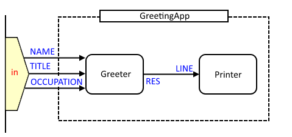

goflow-readme.md
GoFlow - Dataflow and Flow-based programming library for Go (golang)
This is quite a minimalistic implementation of Flow-based programming and several other concurrent models in Go programming language that aims at designing applications as graphs of components which react to data that flows through the graph. This model is a modified version of the goflow language created by V. Sibirov but it allows for multiple channels to be opened over a single process.
The main properties of the proposed model are:
- Concurrent - graph nodes run in parallel.
- Structural - applications are described as components, their ports and connections between them.
- Event-driven - system’s behavior is how components react to events.
- Asynchronous - there is no determined order in which events happen.
- Isolated - sharing is done by communication, state is not shared.
Getting started
Current version of the library requires a latest stable Go release. If you don’t have the Go compiler installed, read the official Go install guide.
Use go tool to install the package in your packages tree:
go get github.com/Synthace/goflow
Then you can use it in import section of your Go programs:
import "github.com/Synthace/goflow"
Basic Example
Below there is a listing of a simple program running a network of two processes with four channels (three inports, one outport). For a more detailed look at the syntax, please refer to the network documentation.

This first one generates greetings for given names, the second one prints them on screen. It demonstrates how components and graphs are defined and how they are embedded into the main program.
package main
import (
"fmt"
"github.com/Synthace/goflow"
)
// A component that generates greetings
type Greeter struct {
flow.Component // component "superclass" embedded
Name <-chan string // input port
Title <-chan string // another input port
Occupation <-chan string // another input port
Res chan<- string // output port
}
// Reaction to a new name input
func (g *Greeter) OnName(name string) {
greeting := fmt.Sprintf("Hello, %s!", name)
g.Res <- greeting
}
// Reaction to a new title input
func (g *Greeter) OnTitle(title string) {
greeting := fmt.Sprintf("I shall call you %s", title)
g.Res <- greeting
}
// Reaction to a new occupation input
func (g *Greeter) OnOccupation(occupation string) {
greeting := fmt.Sprintf("You are a %s. Very impressive!", occupation)
g.Res <- greeting
}
// A component that prints its input on screen
type Printer struct {
flow.Component
Line <-chan string // inport
}
// Prints a line when it gets it
func (p *Printer) OnLine(line string) {
fmt.Println(line)
}
// Our greeting network
type GreetingApp struct {
flow.Graph // graph "superclass" embedded
}
// Graph constructor and structure definition
func NewGreetingApp() *GreetingApp {
n := new(GreetingApp) // creates the object in heap
n.InitGraphState() // allocates memory for the graph
// Add processes to the network
n.Add(new(Greeter), "greeter")
n.Add(new(Printer), "printer")
// Connect them with a channel.
n.Connect("greeter", "Res", "printer", "Line")
// Our net has 3 inports mapped to greeter.Name
n.MapInPort("In1", "greeter", "Name")
n.MapInPort("In2", "greeter", "Title")
n.MapInPort("In3", "greeter", "Occupation")
return n
}
func main() {
// Create the network
net := NewGreetingApp()
// We need channels to talk to it
name := make(chan string)
title := make(chan string)
occupation := make(chan string)
net.SetInPort("In1", name)
net.SetInPort("In2", title)
net.SetInPort("In3", occupation)
// Run the net
flow.RunNet(net)
// Now we can send some strings and see what happens
title <- "Sir"
name <- "John"
name <- "Boris"
title <- "Dame"
name <- "Hanna"
occupation <- "doctor"
// Close the input to shut the network down
close(name)
close(title)
close(occupation)
// Wait until the app has done its job
<-net.Wait()
}
Looks a bit heavy for such a simple task but FBP is aimed at a bit more complex things than just printing on screen. So in more complex an realistic examples the infractructure pays the price.
You probably have one question left even after reading the comments in code: why do we need to wait for the finish signal? This is because flow-based world is asynchronous and while you expect things to happen in the same sequence as they are in main(), during runtime they don’t necessarily follow the same order and the application might terminate before the network has done its job. To avoid this confusion we listen for a signal on network’s Wait() channel which is closed when the network finishes its job.
Terminology
Here are some Flow-based programming terms used in GoFlow:
- Component - the basic element that processes data. Its structure consists of input and output ports and state fields. Its behavior is the set of event handlers. In OOP terms Component is a Class.
- Connection - a link between 2 ports in the graph. In Go it is a channel of specific type.
- Graph - components and connections between them, forming a higher level entity. Graphs may represent composite components or entire applications. In OOP terms Graph is a Class.
- Network - is a Graph instance running in memory. In OOP terms a Network is an object of Graph class.
- Port - is a property of a Component or Graph through which it communicates with the outer world. There are input ports (Inports) and output ports (Outports). For GoFlow components it is a channel field.
- Process - is a Component instance running in memory. In OOP terms a Process is an object of Component class.
More terms can be found in flowbased terms and FBP wiki.
Documentation
Contents
Package docs
Documentation for the flow package can be accessed using standard godoc tool, e.g.
godoc github.com/Synthace/goflow
Links
Here are related projects and resources:
- J. Paul Morrison’s Flow-Based Programming, the origin of FBP, JavaFBP, C#FBP and DrawFBP diagramming tool.
- Knol about FBP
- NoFlo, FBP for JavaScript and Node.js
- Pypes, flow-based Python ETL
- Go, the Go programming language
TODO
- Integration with NoFlo-UI
- Distributed networks via TCP/IP and UDP
- Better run-time restructuring and evolution
- Reflection and monitoring of networks